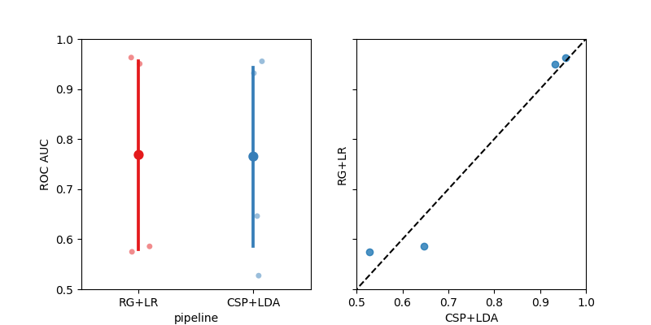

<!DOCTYPE html>

<html>
  <head>
    <meta charset="utf-8" />
    <meta name="viewport" content="width=device-width, initial-scale=1.0" />
    <title>Cross-Session Motor Imagery &#8212; moabb 0.4.6 documentation</title>
    <link rel="stylesheet" href="../_static/pygments.css" type="text/css" />
    <link rel="stylesheet" href="../_static/bootstrap-sphinx.css" type="text/css" />
    <link rel="stylesheet" type="text/css" href="../_static/gallery.css" />
    <link rel="stylesheet" type="text/css" href="../_static/gallery-binder.css" />
    <link rel="stylesheet" type="text/css" href="../_static/gallery-dataframe.css" />
    <link rel="stylesheet" type="text/css" href="../_static/gallery-rendered-html.css" />
    <script id="documentation_options" data-url_root="../" src="../_static/documentation_options.js"></script>
    <script src="../_static/jquery.js"></script>
    <script src="../_static/underscore.js"></script>
    <script src="../_static/doctools.js"></script>
    <link rel="index" title="Index" href="../genindex.html" />
    <link rel="search" title="Search" href="../search.html" />
<meta charset='utf-8'>
<meta http-equiv='X-UA-Compatible' content='IE=edge,chrome=1'>
<meta name='viewport' content='width=device-width, initial-scale=1.0, maximum-scale=1'>
<meta name="apple-mobile-web-app-capable" content="yes">
<script type="text/javascript" src="../_static/js/jquery-1.12.4.min.js"></script>
<script type="text/javascript" src="../_static/js/jquery-fix.js"></script>
<script type="text/javascript" src="../_static/bootstrap-3.4.1/js/bootstrap.min.js"></script>
<script type="text/javascript" src="../_static/bootstrap-sphinx.js"></script>

  </head><body>

  <div id="navbar" class="navbar navbar-inverse navbar-default navbar-fixed-top">
    <div class="container">
      <div class="navbar-header">
        <!-- .btn-navbar is used as the toggle for collapsed navbar content -->
        <button type="button" class="navbar-toggle" data-toggle="collapse" data-target=".nav-collapse">
          <span class="icon-bar"></span>
          <span class="icon-bar"></span>
          <span class="icon-bar"></span>
        </button>
        <a class="navbar-brand" href="../index.html">
          moabb</a>
        <span class="navbar-text navbar-version pull-left"><b>0.4.6</b></span>
      </div>

        <div class="collapse navbar-collapse nav-collapse">
          <ul class="nav navbar-nav">
            
                <li><a href="../whats_new.html">What's new</a></li>
                <li><a href="../api.html">API</a></li>
                <li><a href="index.html">Gallery</a></li>
                <li><a href="../auto_tutorials/index.html">Tutorials</a></li>
            
            
              <li class="dropdown globaltoc-container">
  <a role="button"
     id="dLabelGlobalToc"
     data-toggle="dropdown"
     data-target="#"
     href="../index.html">Site <b class="caret"></b></a>
  <ul class="dropdown-menu globaltoc"
      role="menu"
      aria-labelledby="dLabelGlobalToc"><ul>
<li class="toctree-l1"><a class="reference internal" href="../whats_new.html">What’s new</a><ul>
<li class="toctree-l2"><a class="reference internal" href="../whats_new.html#develop-branch">Develop branch</a></li>
<li class="toctree-l2"><a class="reference internal" href="../whats_new.html#version-0-4-6-stable-pypi">Version - 0.4.6  (Stable - PyPi)</a></li>
<li class="toctree-l2"><a class="reference internal" href="../whats_new.html#version-0-4-5">Version - 0.4.5</a></li>
<li class="toctree-l2"><a class="reference internal" href="../whats_new.html#version-0-4-4">Version - 0.4.4</a></li>
<li class="toctree-l2"><a class="reference internal" href="../whats_new.html#version-0-4-3">Version - 0.4.3</a></li>
<li class="toctree-l2"><a class="reference internal" href="../whats_new.html#version-0-4-2">Version - 0.4.2</a></li>
<li class="toctree-l2"><a class="reference internal" href="../whats_new.html#version-0-4-1">Version - 0.4.1</a></li>
<li class="toctree-l2"><a class="reference internal" href="../whats_new.html#version-0-4-0">Version - 0.4.0</a></li>
<li class="toctree-l2"><a class="reference internal" href="../whats_new.html#version-0-3-0">Version 0.3.0</a></li>
<li class="toctree-l2"><a class="reference internal" href="../whats_new.html#version-0-2-1">Version 0.2.1</a></li>
<li class="toctree-l2"><a class="reference internal" href="../whats_new.html#version-0-2-0">Version 0.2.0</a></li>
</ul>
</li>
</ul>
<p class="caption"><span class="caption-text">Main classes of MOABB:</span></p>
<ul>
<li class="toctree-l1"><a class="reference internal" href="../datasets.html">Datasets</a><ul>
<li class="toctree-l2"><a class="reference internal" href="../datasets.html#motor-imagery-datasets">Motor Imagery Datasets</a></li>
<li class="toctree-l2"><a class="reference internal" href="../datasets.html#erp-datasets">ERP Datasets</a></li>
<li class="toctree-l2"><a class="reference internal" href="../datasets.html#ssvep-datasets">SSVEP Datasets</a></li>
<li class="toctree-l2"><a class="reference internal" href="../datasets.html#base-utils">Base &amp; Utils</a></li>
</ul>
</li>
<li class="toctree-l1"><a class="reference internal" href="../evaluations.html">Evaluations</a><ul>
<li class="toctree-l2"><a class="reference internal" href="../evaluations.html#id1">Evaluations</a></li>
<li class="toctree-l2"><a class="reference internal" href="../evaluations.html#base-utils">Base &amp; Utils</a></li>
</ul>
</li>
<li class="toctree-l1"><a class="reference internal" href="../paradigms.html">Paradigms</a><ul>
<li class="toctree-l2"><a class="reference internal" href="../paradigms.html#motor-imagery-paradigms">Motor Imagery Paradigms</a></li>
<li class="toctree-l2"><a class="reference internal" href="../paradigms.html#p300-paradigms">P300 Paradigms</a></li>
<li class="toctree-l2"><a class="reference internal" href="../paradigms.html#ssvep-paradigms">SSVEP Paradigms</a></li>
<li class="toctree-l2"><a class="reference internal" href="../paradigms.html#base-utils">Base &amp; Utils</a></li>
</ul>
</li>
<li class="toctree-l1"><a class="reference internal" href="../pipelines.html">Pipelines</a><ul>
<li class="toctree-l2"><a class="reference internal" href="../pipelines.html#id1">Pipelines</a></li>
<li class="toctree-l2"><a class="reference internal" href="../pipelines.html#base-utils">Base &amp; Utils</a></li>
</ul>
</li>
<li class="toctree-l1"><a class="reference internal" href="../analysis.html">Analysis</a><ul>
<li class="toctree-l2"><a class="reference internal" href="../analysis.html#plotting">Plotting</a></li>
<li class="toctree-l2"><a class="reference internal" href="../analysis.html#statistics">Statistics</a></li>
</ul>
</li>
</ul>
</ul>
</li>
              
                <li class="dropdown">
  <a role="button"
     id="dLabelLocalToc"
     data-toggle="dropdown"
     data-target="#"
     href="#">Page <b class="caret"></b></a>
  <ul class="dropdown-menu localtoc"
      role="menu"
      aria-labelledby="dLabelLocalToc"><ul>
<li><a class="reference internal" href="#">Cross-Session Motor Imagery</a><ul>
<li><a class="reference internal" href="#create-pipelines">Create Pipelines</a></li>
<li><a class="reference internal" href="#evaluation">Evaluation</a></li>
<li><a class="reference internal" href="#plot-results">Plot Results</a></li>
</ul>
</li>
</ul>
</ul>
</li>
              
            
            
            
            
            
          </ul>

          
            
<form class="navbar-form navbar-right" action="../search.html" method="get">
 <div class="form-group">
  <input type="text" name="q" class="form-control" placeholder="Search" />
 </div>
  <input type="hidden" name="check_keywords" value="yes" />
  <input type="hidden" name="area" value="default" />
</form>
          
        </div>
    </div>
  </div>

<div class="container">
  <div class="row">
    <div class="body col-md-12 content" role="main">
      
  <div class="sphx-glr-download-link-note admonition note">
<p class="admonition-title">Note</p>
<p>Click <a class="reference internal" href="#sphx-glr-download-auto-examples-plot-cross-session-motor-imagery-py"><span class="std std-ref">here</span></a>
to download the full example code</p>
</div>
<div class="sphx-glr-example-title section" id="cross-session-motor-imagery">
<span id="sphx-glr-auto-examples-plot-cross-session-motor-imagery-py"></span><h1>Cross-Session Motor Imagery<a class="headerlink" href="#cross-session-motor-imagery" title="Permalink to this headline">¶</a></h1>
<p>This example show how to perform a cross session motor imagery analysis on the
very popular dataset 2a from the BCI competition IV.</p>
<p>We will compare two pipelines :</p>
<ul class="simple">
<li><p>CSP+LDA</p></li>
<li><p>Riemannian Geometry+Logistic Regression</p></li>
</ul>
<p>We will use the LeftRightImagery paradigm. This will restrict the analysis
to two classes (left hand versus right hand) and use AUC as metric.</p>
<p>The cross session evaluation context will evaluate performance using a leave
one session out cross-validation. For each session in the dataset, a model
is trained on every other session and performance are evaluated on the current
session.</p>
<div class="highlight-default notranslate"><div class="highlight"><pre><span></span><span class="c1"># Authors: Alexandre Barachant &lt;alexandre.barachant@gmail.com&gt;</span>
<span class="c1">#          Sylvain Chevallier &lt;sylvain.chevallier@uvsq.fr&gt;</span>
<span class="c1">#</span>
<span class="c1"># License: BSD (3-clause)</span>

<span class="kn">import</span> <span class="nn">matplotlib.pyplot</span> <span class="k">as</span> <span class="nn">plt</span>
<span class="kn">import</span> <span class="nn">seaborn</span> <span class="k">as</span> <span class="nn">sns</span>
<span class="kn">from</span> <span class="nn">mne.decoding</span> <span class="kn">import</span> <a href="https://mne.tools/stable/generated/mne.decoding.CSP.html#mne.decoding.CSP" title="mne.decoding.CSP" class="sphx-glr-backref-module-mne-decoding sphx-glr-backref-type-py-class"><span class="n">CSP</span></a>
<span class="kn">from</span> <span class="nn">pyriemann.estimation</span> <span class="kn">import</span> <a href="https://scikit-learn.org/stable/modules/generated/sklearn.base.BaseEstimator.html#sklearn.base.BaseEstimator" title="sklearn.base.BaseEstimator" class="sphx-glr-backref-module-sklearn-base sphx-glr-backref-type-py-class"><span class="n">Covariances</span></a>
<span class="kn">from</span> <span class="nn">pyriemann.tangentspace</span> <span class="kn">import</span> <a href="https://scikit-learn.org/stable/modules/generated/sklearn.base.BaseEstimator.html#sklearn.base.BaseEstimator" title="sklearn.base.BaseEstimator" class="sphx-glr-backref-module-sklearn-base sphx-glr-backref-type-py-class"><span class="n">TangentSpace</span></a>
<span class="kn">from</span> <span class="nn">sklearn.discriminant_analysis</span> <span class="kn">import</span> <span class="n">LinearDiscriminantAnalysis</span> <span class="k">as</span> <a href="https://scikit-learn.org/stable/modules/generated/sklearn.discriminant_analysis.LinearDiscriminantAnalysis.html#sklearn.discriminant_analysis.LinearDiscriminantAnalysis" title="sklearn.discriminant_analysis.LinearDiscriminantAnalysis" class="sphx-glr-backref-module-sklearn-discriminant_analysis sphx-glr-backref-type-py-class"><span class="n">LDA</span></a>
<span class="kn">from</span> <span class="nn">sklearn.linear_model</span> <span class="kn">import</span> <a href="https://scikit-learn.org/stable/modules/generated/sklearn.linear_model.LogisticRegression.html#sklearn.linear_model.LogisticRegression" title="sklearn.linear_model.LogisticRegression" class="sphx-glr-backref-module-sklearn-linear_model sphx-glr-backref-type-py-class"><span class="n">LogisticRegression</span></a>
<span class="kn">from</span> <span class="nn">sklearn.pipeline</span> <span class="kn">import</span> <a href="https://scikit-learn.org/stable/modules/generated/sklearn.pipeline.make_pipeline.html#sklearn.pipeline.make_pipeline" title="sklearn.pipeline.make_pipeline" class="sphx-glr-backref-module-sklearn-pipeline sphx-glr-backref-type-py-function"><span class="n">make_pipeline</span></a>

<span class="kn">import</span> <span class="nn">moabb</span>
<span class="kn">from</span> <span class="nn">moabb.datasets</span> <span class="kn">import</span> <span class="n">BNCI2014001</span>
<span class="kn">from</span> <span class="nn">moabb.evaluations</span> <span class="kn">import</span> <a href="https://docs.python.org/3/library/abc.html#abc.ABC" title="abc.ABC" class="sphx-glr-backref-module-abc sphx-glr-backref-type-py-class"><span class="n">CrossSessionEvaluation</span></a>
<span class="kn">from</span> <span class="nn">moabb.paradigms</span> <span class="kn">import</span> <span class="n">LeftRightImagery</span>


<span class="n">moabb</span><span class="o">.</span><span class="n">set_log_level</span><span class="p">(</span><span class="s2">&quot;info&quot;</span><span class="p">)</span>
</pre></div>
</div>
<p class="sphx-glr-script-out">Out:</p>
<div class="sphx-glr-script-out highlight-none notranslate"><div class="highlight"><pre><span></span>/home/runner/work/moabb/moabb/.venv/lib/python3.9/site-packages/seaborn/cm.py:1582: UserWarning: Trying to register the cmap &#39;rocket&#39; which already exists.
  mpl_cm.register_cmap(_name, _cmap)
/home/runner/work/moabb/moabb/.venv/lib/python3.9/site-packages/seaborn/cm.py:1583: UserWarning: Trying to register the cmap &#39;rocket_r&#39; which already exists.
  mpl_cm.register_cmap(_name + &quot;_r&quot;, _cmap_r)
/home/runner/work/moabb/moabb/.venv/lib/python3.9/site-packages/seaborn/cm.py:1582: UserWarning: Trying to register the cmap &#39;mako&#39; which already exists.
  mpl_cm.register_cmap(_name, _cmap)
/home/runner/work/moabb/moabb/.venv/lib/python3.9/site-packages/seaborn/cm.py:1583: UserWarning: Trying to register the cmap &#39;mako_r&#39; which already exists.
  mpl_cm.register_cmap(_name + &quot;_r&quot;, _cmap_r)
/home/runner/work/moabb/moabb/.venv/lib/python3.9/site-packages/seaborn/cm.py:1582: UserWarning: Trying to register the cmap &#39;icefire&#39; which already exists.
  mpl_cm.register_cmap(_name, _cmap)
/home/runner/work/moabb/moabb/.venv/lib/python3.9/site-packages/seaborn/cm.py:1583: UserWarning: Trying to register the cmap &#39;icefire_r&#39; which already exists.
  mpl_cm.register_cmap(_name + &quot;_r&quot;, _cmap_r)
/home/runner/work/moabb/moabb/.venv/lib/python3.9/site-packages/seaborn/cm.py:1582: UserWarning: Trying to register the cmap &#39;vlag&#39; which already exists.
  mpl_cm.register_cmap(_name, _cmap)
/home/runner/work/moabb/moabb/.venv/lib/python3.9/site-packages/seaborn/cm.py:1583: UserWarning: Trying to register the cmap &#39;vlag_r&#39; which already exists.
  mpl_cm.register_cmap(_name + &quot;_r&quot;, _cmap_r)
/home/runner/work/moabb/moabb/.venv/lib/python3.9/site-packages/seaborn/cm.py:1582: UserWarning: Trying to register the cmap &#39;flare&#39; which already exists.
  mpl_cm.register_cmap(_name, _cmap)
/home/runner/work/moabb/moabb/.venv/lib/python3.9/site-packages/seaborn/cm.py:1583: UserWarning: Trying to register the cmap &#39;flare_r&#39; which already exists.
  mpl_cm.register_cmap(_name + &quot;_r&quot;, _cmap_r)
/home/runner/work/moabb/moabb/.venv/lib/python3.9/site-packages/seaborn/cm.py:1582: UserWarning: Trying to register the cmap &#39;crest&#39; which already exists.
  mpl_cm.register_cmap(_name, _cmap)
/home/runner/work/moabb/moabb/.venv/lib/python3.9/site-packages/seaborn/cm.py:1583: UserWarning: Trying to register the cmap &#39;crest_r&#39; which already exists.
  mpl_cm.register_cmap(_name + &quot;_r&quot;, _cmap_r)
</pre></div>
</div>
<div class="section" id="create-pipelines">
<h2>Create Pipelines<a class="headerlink" href="#create-pipelines" title="Permalink to this headline">¶</a></h2>
<p>Pipelines must be a dict of sklearn pipeline transformer.</p>
<p>The CSP implementation is based on the MNE implementation. We selected 8 CSP
components, as usually done in the literature.</p>
<p>The Riemannian geometry pipeline consists in covariance estimation, tangent
space mapping and finally a logistic regression for the classification.</p>
<div class="highlight-default notranslate"><div class="highlight"><pre><span></span><a href="https://docs.python.org/3/library/stdtypes.html#dict" title="builtins.dict" class="sphx-glr-backref-module-builtins sphx-glr-backref-type-py-class sphx-glr-backref-instance"><span class="n">pipelines</span></a> <span class="o">=</span> <span class="p">{}</span>

<a href="https://docs.python.org/3/library/stdtypes.html#dict" title="builtins.dict" class="sphx-glr-backref-module-builtins sphx-glr-backref-type-py-class sphx-glr-backref-instance"><span class="n">pipelines</span></a><span class="p">[</span><span class="s2">&quot;CSP+LDA&quot;</span><span class="p">]</span> <span class="o">=</span> <a href="https://scikit-learn.org/stable/modules/generated/sklearn.pipeline.make_pipeline.html#sklearn.pipeline.make_pipeline" title="sklearn.pipeline.make_pipeline" class="sphx-glr-backref-module-sklearn-pipeline sphx-glr-backref-type-py-function"><span class="n">make_pipeline</span></a><span class="p">(</span><a href="https://mne.tools/stable/generated/mne.decoding.CSP.html#mne.decoding.CSP" title="mne.decoding.CSP" class="sphx-glr-backref-module-mne-decoding sphx-glr-backref-type-py-class"><span class="n">CSP</span></a><span class="p">(</span><span class="n">n_components</span><span class="o">=</span><span class="mi">8</span><span class="p">),</span> <a href="https://scikit-learn.org/stable/modules/generated/sklearn.discriminant_analysis.LinearDiscriminantAnalysis.html#sklearn.discriminant_analysis.LinearDiscriminantAnalysis" title="sklearn.discriminant_analysis.LinearDiscriminantAnalysis" class="sphx-glr-backref-module-sklearn-discriminant_analysis sphx-glr-backref-type-py-class"><span class="n">LDA</span></a><span class="p">())</span>

<a href="https://docs.python.org/3/library/stdtypes.html#dict" title="builtins.dict" class="sphx-glr-backref-module-builtins sphx-glr-backref-type-py-class sphx-glr-backref-instance"><span class="n">pipelines</span></a><span class="p">[</span><span class="s2">&quot;RG+LR&quot;</span><span class="p">]</span> <span class="o">=</span> <a href="https://scikit-learn.org/stable/modules/generated/sklearn.pipeline.make_pipeline.html#sklearn.pipeline.make_pipeline" title="sklearn.pipeline.make_pipeline" class="sphx-glr-backref-module-sklearn-pipeline sphx-glr-backref-type-py-function"><span class="n">make_pipeline</span></a><span class="p">(</span>
    <a href="https://scikit-learn.org/stable/modules/generated/sklearn.base.BaseEstimator.html#sklearn.base.BaseEstimator" title="sklearn.base.BaseEstimator" class="sphx-glr-backref-module-sklearn-base sphx-glr-backref-type-py-class"><span class="n">Covariances</span></a><span class="p">(),</span> <a href="https://scikit-learn.org/stable/modules/generated/sklearn.base.BaseEstimator.html#sklearn.base.BaseEstimator" title="sklearn.base.BaseEstimator" class="sphx-glr-backref-module-sklearn-base sphx-glr-backref-type-py-class"><span class="n">TangentSpace</span></a><span class="p">(),</span> <a href="https://scikit-learn.org/stable/modules/generated/sklearn.linear_model.LogisticRegression.html#sklearn.linear_model.LogisticRegression" title="sklearn.linear_model.LogisticRegression" class="sphx-glr-backref-module-sklearn-linear_model sphx-glr-backref-type-py-class"><span class="n">LogisticRegression</span></a><span class="p">(</span><span class="n">solver</span><span class="o">=</span><span class="s2">&quot;lbfgs&quot;</span><span class="p">)</span>
<span class="p">)</span>
</pre></div>
</div>
</div>
<div class="section" id="evaluation">
<h2>Evaluation<a class="headerlink" href="#evaluation" title="Permalink to this headline">¶</a></h2>
<p>We define the paradigm (LeftRightImagery) and the dataset (BNCI2014001).
The evaluation will return a DataFrame containing a single AUC score for
each subject / session of the dataset, and for each pipeline.</p>
<p>Results are saved into the database, so that if you add a new pipeline, it
will not run again the evaluation unless a parameter has changed. Results can
be overwritten if necessary.</p>
<div class="highlight-default notranslate"><div class="highlight"><pre><span></span><span class="n">paradigm</span> <span class="o">=</span> <span class="n">LeftRightImagery</span><span class="p">()</span>
<span class="c1"># Because this is being auto-generated we only use 2 subjects</span>
<span class="n">dataset</span> <span class="o">=</span> <span class="n">BNCI2014001</span><span class="p">()</span>
<a href="https://docs.python.org/3/library/stdtypes.html#list" title="builtins.list" class="sphx-glr-backref-module-builtins sphx-glr-backref-type-py-class sphx-glr-backref-instance"><span class="n">dataset</span><span class="o">.</span><span class="n">subject_list</span></a> <span class="o">=</span> <a href="https://docs.python.org/3/library/stdtypes.html#list" title="builtins.list" class="sphx-glr-backref-module-builtins sphx-glr-backref-type-py-class sphx-glr-backref-instance"><span class="n">dataset</span><span class="o">.</span><span class="n">subject_list</span></a><span class="p">[:</span><span class="mi">2</span><span class="p">]</span>
<a href="https://docs.python.org/3/library/stdtypes.html#list" title="builtins.list" class="sphx-glr-backref-module-builtins sphx-glr-backref-type-py-class sphx-glr-backref-instance"><span class="n">datasets</span></a> <span class="o">=</span> <span class="p">[</span><span class="n">dataset</span><span class="p">]</span>
<a href="https://docs.python.org/3/library/functions.html#bool" title="builtins.bool" class="sphx-glr-backref-module-builtins sphx-glr-backref-type-py-class sphx-glr-backref-instance"><span class="n">overwrite</span></a> <span class="o">=</span> <span class="kc">False</span>  <span class="c1"># set to True if we want to overwrite cached results</span>
<span class="n">evaluation</span> <span class="o">=</span> <a href="https://docs.python.org/3/library/abc.html#abc.ABC" title="abc.ABC" class="sphx-glr-backref-module-abc sphx-glr-backref-type-py-class"><span class="n">CrossSessionEvaluation</span></a><span class="p">(</span>
    <span class="n">paradigm</span><span class="o">=</span><span class="n">paradigm</span><span class="p">,</span> <a href="https://docs.python.org/3/library/stdtypes.html#list" title="builtins.list" class="sphx-glr-backref-module-builtins sphx-glr-backref-type-py-class sphx-glr-backref-instance"><span class="n">datasets</span></a><span class="o">=</span><a href="https://docs.python.org/3/library/stdtypes.html#list" title="builtins.list" class="sphx-glr-backref-module-builtins sphx-glr-backref-type-py-class sphx-glr-backref-instance"><span class="n">datasets</span></a><span class="p">,</span> <span class="n">suffix</span><span class="o">=</span><span class="s2">&quot;examples&quot;</span><span class="p">,</span> <a href="https://docs.python.org/3/library/functions.html#bool" title="builtins.bool" class="sphx-glr-backref-module-builtins sphx-glr-backref-type-py-class sphx-glr-backref-instance"><span class="n">overwrite</span></a><span class="o">=</span><a href="https://docs.python.org/3/library/functions.html#bool" title="builtins.bool" class="sphx-glr-backref-module-builtins sphx-glr-backref-type-py-class sphx-glr-backref-instance"><span class="n">overwrite</span></a>
<span class="p">)</span>

<span class="n">results</span> <span class="o">=</span> <span class="n">evaluation</span><span class="o">.</span><span class="n">process</span><span class="p">(</span><a href="https://docs.python.org/3/library/stdtypes.html#dict" title="builtins.dict" class="sphx-glr-backref-module-builtins sphx-glr-backref-type-py-class sphx-glr-backref-instance"><span class="n">pipelines</span></a><span class="p">)</span>

<span class="nb">print</span><span class="p">(</span><span class="n">results</span><span class="o">.</span><span class="n">head</span><span class="p">())</span>
</pre></div>
</div>
<p class="sphx-glr-script-out">Out:</p>
<div class="sphx-glr-script-out highlight-none notranslate"><div class="highlight"><pre><span></span>/home/runner/work/moabb/moabb/moabb/analysis/results.py:79: RuntimeWarning: Setting non-standard config type: &quot;MOABB_RESULTS&quot;
  set_config(&quot;MOABB_RESULTS&quot;, osp.join(osp.expanduser(&quot;~&quot;), &quot;mne_data&quot;))
2022-04-07 10:10:08,738 INFO MainThread moabb.evaluations.base Processing dataset: 001-2014

001-2014-CrossSession:   0%|          | 0/2 [00:00&lt;?, ?it/s]MNE_DATA is not already configured. It will be set to default location in the home directory - /home/runner/mne_data
All datasets will be downloaded to this location, if anything is already downloaded, please move manually to this location
/home/runner/work/moabb/moabb/moabb/datasets/download.py:53: RuntimeWarning: Setting non-standard config type: &quot;MNE_DATASETS_BNCI_PATH&quot;
  set_config(key, get_config(&quot;MNE_DATA&quot;))


  0%|                                              | 0.00/42.8M [00:00&lt;?, ?B/s]

  0%|                                   | 1.02k/42.8M [00:00&lt;1:31:34, 7.79kB/s]

  0%|                                     | 17.4k/42.8M [00:00&lt;09:20, 76.3kB/s]

  0%|                                     | 33.8k/42.8M [00:00&lt;07:15, 98.3kB/s]

  0%|                                      | 50.2k/42.8M [00:00&lt;06:33, 109kB/s]

  0%|                                      | 82.9k/42.8M [00:00&lt;04:28, 159kB/s]

  0%|                                      | 99.3k/42.8M [00:00&lt;04:49, 147kB/s]

  0%|                                       | 132k/42.8M [00:00&lt;03:56, 181kB/s]

  0%|▏                                      | 151k/42.8M [00:01&lt;04:14, 167kB/s]

  0%|▏                                      | 181k/42.8M [00:01&lt;03:48, 186kB/s]

  0%|▏                                      | 214k/42.8M [00:01&lt;03:27, 205kB/s]

  1%|▏                                      | 234k/42.8M [00:01&lt;03:44, 190kB/s]

  1%|▏                                      | 263k/42.8M [00:01&lt;03:34, 198kB/s]

  1%|▎                                      | 312k/42.8M [00:01&lt;02:49, 251kB/s]

  1%|▎                                      | 361k/42.8M [00:01&lt;02:27, 288kB/s]

  1%|▎                                      | 394k/42.8M [00:01&lt;02:33, 276kB/s]

  1%|▍                                      | 443k/42.8M [00:02&lt;02:18, 305kB/s]

  1%|▍                                      | 493k/42.8M [00:02&lt;02:09, 326kB/s]

  1%|▌                                      | 558k/42.8M [00:02&lt;01:52, 377kB/s]

  1%|▌                                      | 624k/42.8M [00:02&lt;01:42, 413kB/s]

  2%|▋                                      | 706k/42.8M [00:02&lt;01:28, 475kB/s]

  2%|▋                                      | 787k/42.8M [00:02&lt;01:21, 514kB/s]

  2%|▊                                      | 869k/42.8M [00:02&lt;01:17, 544kB/s]

  2%|▊                                      | 951k/42.8M [00:03&lt;01:13, 568kB/s]

  2%|▉                                     | 1.05M/42.8M [00:03&lt;01:07, 621kB/s]

  3%|▉                                     | 1.12M/42.8M [00:03&lt;01:11, 584kB/s]

  3%|█                                     | 1.23M/42.8M [00:03&lt;01:02, 670kB/s]

  3%|█▏                                    | 1.36M/42.8M [00:03&lt;00:54, 765kB/s]

  3%|█▎                                    | 1.49M/42.8M [00:03&lt;00:49, 838kB/s]

  4%|█▍                                    | 1.66M/42.8M [00:03&lt;00:42, 960kB/s]

  4%|█▌                                   | 1.82M/42.8M [00:03&lt;00:39, 1.04MB/s]

  5%|█▋                                   | 2.02M/42.8M [00:04&lt;00:34, 1.17MB/s]

  5%|█▉                                   | 2.23M/42.8M [00:04&lt;00:31, 1.30MB/s]

  6%|██                                   | 2.39M/42.8M [00:04&lt;00:31, 1.28MB/s]

  6%|██▎                                  | 2.62M/42.8M [00:04&lt;00:28, 1.42MB/s]

  7%|██▍                                  | 2.84M/42.8M [00:04&lt;00:27, 1.48MB/s]

  7%|██▋                                  | 3.10M/42.8M [00:04&lt;00:24, 1.63MB/s]

  8%|██▉                                  | 3.36M/42.8M [00:04&lt;00:22, 1.72MB/s]

  9%|███▏                                 | 3.65M/42.8M [00:05&lt;00:20, 1.88MB/s]

  9%|███▍                                 | 3.97M/42.8M [00:05&lt;00:19, 2.00MB/s]

 10%|███▋                                 | 4.29M/42.8M [00:05&lt;00:17, 2.14MB/s]

 11%|████                                 | 4.64M/42.8M [00:05&lt;00:16, 2.28MB/s]

 12%|████▎                                | 5.01M/42.8M [00:05&lt;00:15, 2.42MB/s]

 13%|████▋                                | 5.41M/42.8M [00:05&lt;00:14, 2.59MB/s]

 14%|█████                                | 5.83M/42.8M [00:05&lt;00:13, 2.78MB/s]

 15%|█████▍                               | 6.29M/42.8M [00:05&lt;00:12, 2.99MB/s]

 16%|█████▊                               | 6.78M/42.8M [00:06&lt;00:11, 3.19MB/s]

 17%|██████▎                              | 7.32M/42.8M [00:06&lt;00:10, 3.44MB/s]

 18%|██████▊                              | 7.85M/42.8M [00:06&lt;00:09, 3.60MB/s]

 20%|███████▎                             | 8.44M/42.8M [00:06&lt;00:08, 3.86MB/s]

 21%|███████▊                             | 9.08M/42.8M [00:06&lt;00:08, 4.14MB/s]

 23%|████████▍                            | 9.70M/42.8M [00:06&lt;00:07, 4.31MB/s]

 24%|████████▉                            | 10.4M/42.8M [00:06&lt;00:07, 4.62MB/s]

 26%|█████████▋                           | 11.2M/42.8M [00:07&lt;00:06, 4.98MB/s]

 28%|██████████▎                          | 12.0M/42.8M [00:07&lt;00:05, 5.30MB/s]

 30%|███████████                          | 12.8M/42.8M [00:07&lt;00:05, 5.65MB/s]

 32%|███████████▉                         | 13.8M/42.8M [00:07&lt;00:04, 6.06MB/s]

 34%|████████████▋                        | 14.7M/42.8M [00:07&lt;00:04, 6.43MB/s]

 37%|█████████████▋                       | 15.8M/42.8M [00:07&lt;00:03, 6.89MB/s]

 39%|██████████████▌                      | 16.8M/42.8M [00:07&lt;00:03, 7.21MB/s]

 42%|███████████████▌                     | 18.0M/42.8M [00:07&lt;00:03, 7.68MB/s]

 45%|████████████████▌                    | 19.2M/42.8M [00:08&lt;00:02, 8.14MB/s]

 48%|█████████████████▋                   | 20.5M/42.8M [00:08&lt;00:02, 8.57MB/s]

 51%|██████████████████▉                  | 21.9M/42.8M [00:08&lt;00:02, 9.11MB/s]

 54%|████████████████████                 | 23.2M/42.8M [00:08&lt;00:02, 9.51MB/s]

 58%|█████████████████████▍               | 24.8M/42.8M [00:08&lt;00:01, 10.1MB/s]

 62%|██████████████████████▊              | 26.4M/42.8M [00:08&lt;00:01, 10.7MB/s]

 66%|████████████████████████▎            | 28.1M/42.8M [00:08&lt;00:01, 11.4MB/s]

 70%|█████████████████████████▊           | 29.9M/42.8M [00:09&lt;00:01, 12.0MB/s]

 74%|███████████████████████████▍         | 31.8M/42.8M [00:09&lt;00:00, 12.7MB/s]

 79%|█████████████████████████████▏       | 33.8M/42.8M [00:09&lt;00:00, 13.4MB/s]

 84%|███████████████████████████████      | 35.9M/42.8M [00:09&lt;00:00, 14.2MB/s]

 89%|████████████████████████████████▉    | 38.1M/42.8M [00:09&lt;00:00, 15.0MB/s]

 95%|██████████████████████████████████▉  | 40.5M/42.8M [00:09&lt;00:00, 15.7MB/s]

  0%|                                              | 0.00/42.8M [00:00&lt;?, ?B/s]
100%|█████████████████████████████████████| 42.8M/42.8M [00:00&lt;00:00, 45.4GB/s]


  0%|                                              | 0.00/43.8M [00:00&lt;?, ?B/s]

  0%|                                   | 1.02k/43.8M [00:00&lt;1:33:48, 7.78kB/s]

  0%|                                     | 17.4k/43.8M [00:00&lt;09:36, 75.9kB/s]

  0%|                                     | 33.8k/43.8M [00:00&lt;07:26, 97.9kB/s]

  0%|                                      | 50.2k/43.8M [00:00&lt;06:43, 108kB/s]

  0%|                                      | 82.9k/43.8M [00:00&lt;04:35, 159kB/s]

  0%|                                       | 116k/43.8M [00:00&lt;03:50, 189kB/s]

  0%|▏                                      | 148k/43.8M [00:00&lt;03:29, 208kB/s]

  0%|▏                                      | 181k/43.8M [00:01&lt;03:17, 221kB/s]

  0%|▏                                      | 214k/43.8M [00:01&lt;03:09, 230kB/s]

  1%|▏                                      | 263k/43.8M [00:01&lt;02:39, 274kB/s]

  1%|▎                                      | 329k/43.8M [00:01&lt;02:07, 340kB/s]

  1%|▎                                      | 378k/43.8M [00:01&lt;02:04, 349kB/s]

  1%|▍                                      | 443k/43.8M [00:01&lt;01:50, 394kB/s]

  1%|▍                                      | 525k/43.8M [00:01&lt;01:33, 462kB/s]

  1%|▌                                      | 591k/43.8M [00:01&lt;01:31, 472kB/s]

  2%|▌                                      | 673k/43.8M [00:02&lt;01:23, 517kB/s]

  2%|▋                                      | 771k/43.8M [00:02&lt;01:13, 583kB/s]

  2%|▊                                      | 886k/43.8M [00:02&lt;01:04, 668kB/s]

  2%|▊                                     | 1.00M/43.8M [00:02&lt;00:58, 726kB/s]

  3%|▉                                     | 1.12M/43.8M [00:02&lt;00:55, 769kB/s]

  3%|█                                     | 1.25M/43.8M [00:02&lt;00:50, 836kB/s]

  3%|█▏                                    | 1.39M/43.8M [00:02&lt;00:46, 920kB/s]

  4%|█▎                                    | 1.54M/43.8M [00:03&lt;00:43, 973kB/s]

  4%|█▍                                   | 1.72M/43.8M [00:03&lt;00:38, 1.08MB/s]

  4%|█▌                                   | 1.90M/43.8M [00:03&lt;00:36, 1.15MB/s]

  5%|█▋                                   | 2.03M/43.8M [00:03&lt;00:37, 1.12MB/s]

  5%|█▉                                   | 2.23M/43.8M [00:03&lt;00:33, 1.23MB/s]

  6%|██                                   | 2.46M/43.8M [00:03&lt;00:30, 1.37MB/s]

  6%|██▎                                  | 2.69M/43.8M [00:03&lt;00:28, 1.47MB/s]

  7%|██▍                                  | 2.93M/43.8M [00:03&lt;00:25, 1.58MB/s]

  7%|██▋                                  | 3.20M/43.8M [00:04&lt;00:23, 1.70MB/s]

  8%|██▉                                  | 3.49M/43.8M [00:04&lt;00:21, 1.86MB/s]

  9%|███▏                                 | 3.77M/43.8M [00:04&lt;00:20, 1.93MB/s]

  9%|███▍                                 | 4.10M/43.8M [00:04&lt;00:18, 2.09MB/s]

 10%|███▊                                 | 4.46M/43.8M [00:04&lt;00:17, 2.28MB/s]

 11%|████                                 | 4.79M/43.8M [00:04&lt;00:16, 2.34MB/s]

 12%|████▍                                | 5.18M/43.8M [00:04&lt;00:15, 2.53MB/s]

 13%|████▊                                | 5.62M/43.8M [00:05&lt;00:14, 2.71MB/s]

 14%|█████▏                               | 6.08M/43.8M [00:05&lt;00:12, 3.01MB/s]

 15%|█████▌                               | 6.52M/43.8M [00:05&lt;00:12, 3.10MB/s]

 16%|█████▉                               | 7.05M/43.8M [00:05&lt;00:11, 3.31MB/s]

 17%|██████▍                              | 7.60M/43.8M [00:05&lt;00:10, 3.58MB/s]

 19%|██████▉                              | 8.21M/43.8M [00:05&lt;00:09, 3.84MB/s]

 20%|███████▍                             | 8.83M/43.8M [00:05&lt;00:08, 4.10MB/s]

 22%|████████                             | 9.47M/43.8M [00:05&lt;00:07, 4.32MB/s]

 23%|████████▋                            | 10.2M/43.8M [00:06&lt;00:07, 4.70MB/s]

 25%|█████████▎                           | 11.0M/43.8M [00:06&lt;00:06, 5.09MB/s]

 27%|██████████                           | 11.9M/43.8M [00:06&lt;00:05, 5.53MB/s]

 29%|██████████▊                          | 12.8M/43.8M [00:06&lt;00:05, 5.91MB/s]

 32%|███████████▋                         | 13.8M/43.8M [00:06&lt;00:04, 6.40MB/s]

 34%|████████████▌                        | 14.9M/43.8M [00:06&lt;00:04, 6.87MB/s]

 37%|█████████████▌                       | 16.0M/43.8M [00:06&lt;00:03, 7.35MB/s]

 39%|██████████████▌                      | 17.2M/43.8M [00:07&lt;00:03, 7.92MB/s]

 42%|███████████████▋                     | 18.5M/43.8M [00:07&lt;00:02, 8.48MB/s]

 45%|████████████████▊                    | 19.9M/43.8M [00:07&lt;00:02, 8.99MB/s]

 49%|██████████████████                   | 21.3M/43.8M [00:07&lt;00:02, 9.64MB/s]

 52%|███████████████████▎                 | 22.9M/43.8M [00:07&lt;00:02, 10.3MB/s]

 56%|████████████████████▊                | 24.6M/43.8M [00:07&lt;00:01, 11.0MB/s]

 60%|██████████████████████▎              | 26.4M/43.8M [00:07&lt;00:01, 11.8MB/s]

 65%|████████████████████████             | 28.4M/43.8M [00:07&lt;00:01, 12.7MB/s]

 70%|█████████████████████████▊           | 30.5M/43.8M [00:08&lt;00:00, 13.6MB/s]

 75%|███████████████████████████▋         | 32.7M/43.8M [00:08&lt;00:00, 14.5MB/s]

 80%|█████████████████████████████▌       | 35.0M/43.8M [00:08&lt;00:00, 15.5MB/s]

 86%|███████████████████████████████▋     | 37.5M/43.8M [00:08&lt;00:00, 16.4MB/s]

 92%|█████████████████████████████████▉   | 40.1M/43.8M [00:08&lt;00:00, 18.4MB/s]

 97%|████████████████████████████████████ | 42.6M/43.8M [00:08&lt;00:00, 20.0MB/s]

  0%|                                              | 0.00/43.8M [00:00&lt;?, ?B/s]
100%|█████████████████████████████████████| 43.8M/43.8M [00:00&lt;00:00, 48.2GB/s]
/home/runner/work/moabb/moabb/.venv/lib/python3.9/site-packages/mne/utils/check.py:92: DeprecationWarning: distutils Version classes are deprecated. Use packaging.version instead.
  LooseVersion(library.__version__) &lt; LooseVersion(min_version):
/home/runner/work/moabb/moabb/.venv/lib/python3.9/site-packages/mne/utils/check.py:92: DeprecationWarning: distutils Version classes are deprecated. Use packaging.version instead.
  LooseVersion(library.__version__) &lt; LooseVersion(min_version):
/home/runner/work/moabb/moabb/.venv/lib/python3.9/site-packages/mne/utils/check.py:92: DeprecationWarning: distutils Version classes are deprecated. Use packaging.version instead.
  LooseVersion(library.__version__) &lt; LooseVersion(min_version):
/home/runner/work/moabb/moabb/.venv/lib/python3.9/site-packages/mne/utils/check.py:92: DeprecationWarning: distutils Version classes are deprecated. Use packaging.version instead.
  LooseVersion(library.__version__) &lt; LooseVersion(min_version):
2022-04-07 10:10:33,526 INFO MainThread moabb.evaluations.base CSP+LDA | 001-2014 | 1 | session_E: Score 0.955
/home/runner/work/moabb/moabb/.venv/lib/python3.9/site-packages/mne/utils/check.py:92: DeprecationWarning: distutils Version classes are deprecated. Use packaging.version instead.
  LooseVersion(library.__version__) &lt; LooseVersion(min_version):
/home/runner/work/moabb/moabb/.venv/lib/python3.9/site-packages/mne/utils/check.py:92: DeprecationWarning: distutils Version classes are deprecated. Use packaging.version instead.
  LooseVersion(library.__version__) &lt; LooseVersion(min_version):
/home/runner/work/moabb/moabb/.venv/lib/python3.9/site-packages/mne/utils/check.py:92: DeprecationWarning: distutils Version classes are deprecated. Use packaging.version instead.
  LooseVersion(library.__version__) &lt; LooseVersion(min_version):
/home/runner/work/moabb/moabb/.venv/lib/python3.9/site-packages/mne/utils/check.py:92: DeprecationWarning: distutils Version classes are deprecated. Use packaging.version instead.
  LooseVersion(library.__version__) &lt; LooseVersion(min_version):
2022-04-07 10:10:33,989 INFO MainThread moabb.evaluations.base CSP+LDA | 001-2014 | 1 | session_T: Score 0.932
2022-04-07 10:10:34,556 INFO MainThread moabb.evaluations.base RG+LR | 001-2014 | 1 | session_E: Score 0.963
2022-04-07 10:10:35,147 INFO MainThread moabb.evaluations.base RG+LR | 001-2014 | 1 | session_T: Score 0.950

001-2014-CrossSession:  50%|#####     | 1/2 [00:26&lt;00:26, 26.42s/it]

  0%|                                              | 0.00/43.1M [00:00&lt;?, ?B/s]

  0%|                                   | 1.02k/43.1M [00:00&lt;1:32:01, 7.80kB/s]

  0%|                                     | 17.4k/43.1M [00:00&lt;09:23, 76.4kB/s]

  0%|                                     | 33.8k/43.1M [00:00&lt;07:17, 98.3kB/s]

  0%|                                      | 50.2k/43.1M [00:00&lt;06:36, 109kB/s]

  0%|                                      | 82.9k/43.1M [00:00&lt;04:30, 159kB/s]

  0%|                                      | 99.3k/43.1M [00:00&lt;04:51, 147kB/s]

  0%|                                       | 132k/43.1M [00:00&lt;03:58, 180kB/s]

  0%|▏                                      | 151k/43.1M [00:01&lt;04:16, 167kB/s]

  0%|▏                                      | 181k/43.1M [00:01&lt;03:48, 188kB/s]

  0%|▏                                      | 214k/43.1M [00:01&lt;03:27, 206kB/s]

  1%|▏                                      | 247k/43.1M [00:01&lt;03:15, 219kB/s]

  1%|▎                                      | 280k/43.1M [00:01&lt;03:07, 228kB/s]

  1%|▎                                      | 329k/43.1M [00:01&lt;02:37, 271kB/s]

  1%|▎                                      | 361k/43.1M [00:01&lt;02:41, 265kB/s]

  1%|▎                                      | 411k/43.1M [00:01&lt;02:23, 297kB/s]

  1%|▍                                      | 476k/43.1M [00:02&lt;01:59, 356kB/s]

  1%|▍                                      | 525k/43.1M [00:02&lt;01:57, 361kB/s]

  1%|▌                                      | 574k/43.1M [00:02&lt;01:56, 364kB/s]

  1%|▌                                      | 640k/43.1M [00:02&lt;01:45, 402kB/s]

  2%|▋                                      | 706k/43.1M [00:02&lt;01:38, 431kB/s]

  2%|▋                                      | 787k/43.1M [00:02&lt;01:26, 486kB/s]

  2%|▊                                      | 853k/43.1M [00:02&lt;01:25, 491kB/s]

  2%|▊                                      | 935k/43.1M [00:03&lt;01:19, 528kB/s]

  2%|▉                                     | 1.02M/43.1M [00:03&lt;01:15, 555kB/s]

  3%|▉                                     | 1.12M/43.1M [00:03&lt;01:09, 604kB/s]

  3%|█                                     | 1.21M/43.1M [00:03&lt;01:04, 644kB/s]

  3%|█▏                                    | 1.31M/43.1M [00:03&lt;01:01, 675kB/s]

  3%|█▏                                    | 1.41M/43.1M [00:03&lt;00:59, 696kB/s]

  4%|█▎                                    | 1.52M/43.1M [00:03&lt;00:55, 746kB/s]

  4%|█▍                                    | 1.62M/43.1M [00:03&lt;00:55, 743kB/s]

  4%|█▌                                    | 1.75M/43.1M [00:04&lt;00:50, 818kB/s]

  4%|█▋                                    | 1.89M/43.1M [00:04&lt;00:47, 870kB/s]

  5%|█▊                                    | 2.03M/43.1M [00:04&lt;00:43, 942kB/s]

  5%|█▉                                    | 2.16M/43.1M [00:04&lt;00:42, 958kB/s]

  5%|█▉                                    | 2.26M/43.1M [00:04&lt;00:45, 895kB/s]

  6%|██                                   | 2.43M/43.1M [00:04&lt;00:40, 1.00MB/s]

  6%|██▏                                  | 2.59M/43.1M [00:04&lt;00:37, 1.07MB/s]

  6%|██▎                                  | 2.72M/43.1M [00:05&lt;00:38, 1.05MB/s]

  7%|██▌                                  | 2.92M/43.1M [00:05&lt;00:34, 1.18MB/s]

  7%|██▋                                  | 3.13M/43.1M [00:05&lt;00:30, 1.30MB/s]

  8%|██▉                                  | 3.36M/43.1M [00:05&lt;00:27, 1.43MB/s]

  8%|███                                  | 3.59M/43.1M [00:05&lt;00:25, 1.52MB/s]

  9%|███▎                                 | 3.80M/43.1M [00:05&lt;00:25, 1.55MB/s]

  9%|███▍                                 | 4.06M/43.1M [00:05&lt;00:23, 1.68MB/s]

 10%|███▋                                 | 4.36M/43.1M [00:05&lt;00:20, 1.85MB/s]

 11%|████                                 | 4.67M/43.1M [00:06&lt;00:19, 1.97MB/s]

 12%|████▎                                | 5.00M/43.1M [00:06&lt;00:17, 2.13MB/s]

 12%|████▌                                | 5.34M/43.1M [00:06&lt;00:16, 2.27MB/s]

 13%|████▉                                | 5.75M/43.1M [00:06&lt;00:14, 2.49MB/s]

 14%|█████▎                               | 6.19M/43.1M [00:06&lt;00:13, 2.71MB/s]

 16%|█████▋                               | 6.69M/43.1M [00:06&lt;00:12, 3.00MB/s]

 17%|██████▏                              | 7.14M/43.1M [00:06&lt;00:11, 3.15MB/s]

 18%|██████▌                              | 7.65M/43.1M [00:07&lt;00:10, 3.36MB/s]

 19%|███████                              | 8.24M/43.1M [00:07&lt;00:09, 3.68MB/s]

 21%|███████▌                             | 8.86M/43.1M [00:07&lt;00:08, 3.94MB/s]

 22%|████████▏                            | 9.54M/43.1M [00:07&lt;00:07, 4.28MB/s]

 24%|████████▊                            | 10.2M/43.1M [00:07&lt;00:07, 4.60MB/s]

 26%|█████████▍                           | 11.0M/43.1M [00:07&lt;00:06, 4.91MB/s]

 27%|██████████▏                          | 11.8M/43.1M [00:07&lt;00:05, 5.26MB/s]

 29%|██████████▊                          | 12.6M/43.1M [00:07&lt;00:05, 5.62MB/s]

 31%|███████████▋                         | 13.6M/43.1M [00:08&lt;00:04, 5.99MB/s]

 34%|████████████▍                        | 14.5M/43.1M [00:08&lt;00:04, 6.41MB/s]

 36%|█████████████▎                       | 15.6M/43.1M [00:08&lt;00:04, 6.84MB/s]

 39%|██████████████▎                      | 16.7M/43.1M [00:08&lt;00:03, 7.32MB/s]

 41%|███████████████▎                     | 17.9M/43.1M [00:08&lt;00:03, 7.79MB/s]

 44%|████████████████▍                    | 19.1M/43.1M [00:08&lt;00:02, 8.35MB/s]

 48%|█████████████████▌                   | 20.5M/43.1M [00:08&lt;00:02, 8.97MB/s]

 51%|██████████████████▉                  | 22.0M/43.1M [00:09&lt;00:02, 9.52MB/s]

 55%|████████████████████▏                | 23.5M/43.1M [00:09&lt;00:01, 10.2MB/s]

 59%|█████████████████████▋               | 25.2M/43.1M [00:09&lt;00:01, 10.9MB/s]

 63%|███████████████████████▏             | 26.9M/43.1M [00:09&lt;00:01, 11.5MB/s]

 67%|████████████████████████▋            | 28.8M/43.1M [00:09&lt;00:01, 12.2MB/s]

 71%|██████████████████████████▍          | 30.7M/43.1M [00:09&lt;00:00, 13.0MB/s]

 76%|████████████████████████████▏        | 32.8M/43.1M [00:09&lt;00:00, 13.8MB/s]

 81%|██████████████████████████████       | 35.0M/43.1M [00:09&lt;00:00, 14.6MB/s]

 87%|████████████████████████████████     | 37.3M/43.1M [00:10&lt;00:00, 15.6MB/s]

 93%|██████████████████████████████████▏  | 39.8M/43.1M [00:10&lt;00:00, 16.5MB/s]

 99%|████████████████████████████████████▍| 42.5M/43.1M [00:10&lt;00:00, 17.4MB/s]

  0%|                                              | 0.00/43.1M [00:00&lt;?, ?B/s]
100%|█████████████████████████████████████| 43.1M/43.1M [00:00&lt;00:00, 60.5GB/s]


  0%|                                              | 0.00/44.2M [00:00&lt;?, ?B/s]

  0%|                                   | 1.02k/44.2M [00:00&lt;1:35:12, 7.74kB/s]

  0%|                                     | 17.4k/44.2M [00:00&lt;09:41, 76.0kB/s]

  0%|                                     | 33.8k/44.2M [00:00&lt;07:31, 97.8kB/s]

  0%|                                      | 50.2k/44.2M [00:00&lt;06:48, 108kB/s]

  0%|                                      | 82.9k/44.2M [00:00&lt;04:38, 158kB/s]

  0%|                                      | 99.3k/44.2M [00:00&lt;05:00, 147kB/s]

  0%|                                       | 132k/44.2M [00:00&lt;04:05, 180kB/s]

  0%|▏                                      | 165k/44.2M [00:01&lt;03:38, 201kB/s]

  0%|▏                                      | 198k/44.2M [00:01&lt;03:23, 216kB/s]

  1%|▏                                      | 230k/44.2M [00:01&lt;03:14, 226kB/s]

  1%|▏                                      | 263k/44.2M [00:01&lt;03:08, 233kB/s]

  1%|▎                                      | 296k/44.2M [00:01&lt;03:05, 237kB/s]

  1%|▎                                      | 345k/44.2M [00:01&lt;02:37, 278kB/s]

  1%|▎                                      | 394k/44.2M [00:01&lt;02:23, 305kB/s]

  1%|▍                                      | 443k/44.2M [00:01&lt;02:14, 325kB/s]

  1%|▍                                      | 509k/44.2M [00:02&lt;01:56, 376kB/s]

  1%|▍                                      | 558k/44.2M [00:02&lt;01:56, 374kB/s]

  1%|▌                                      | 624k/44.2M [00:02&lt;01:46, 410kB/s]

  2%|▌                                      | 689k/44.2M [00:02&lt;01:40, 435kB/s]

  2%|▋                                      | 755k/44.2M [00:02&lt;01:35, 453kB/s]

  2%|▋                                      | 820k/44.2M [00:02&lt;01:33, 466kB/s]

  2%|▊                                      | 886k/44.2M [00:02&lt;01:31, 475kB/s]

  2%|▊                                      | 951k/44.2M [00:03&lt;01:29, 481kB/s]

  2%|▊                                     | 1.02M/44.2M [00:03&lt;01:29, 485kB/s]

  3%|▉                                     | 1.12M/44.2M [00:03&lt;01:16, 563kB/s]

  3%|█                                     | 1.18M/44.2M [00:03&lt;01:19, 542kB/s]

  3%|█                                     | 1.28M/44.2M [00:03&lt;01:11, 603kB/s]

  3%|█▏                                    | 1.36M/44.2M [00:03&lt;01:10, 608kB/s]

  3%|█▎                                    | 1.49M/44.2M [00:03&lt;00:59, 720kB/s]

  4%|█▎                                    | 1.59M/44.2M [00:03&lt;00:58, 727kB/s]

  4%|█▍                                    | 1.72M/44.2M [00:04&lt;00:52, 806kB/s]

  4%|█▌                                    | 1.85M/44.2M [00:04&lt;00:49, 862kB/s]

  4%|█▋                                    | 1.98M/44.2M [00:04&lt;00:46, 901kB/s]

  5%|█▊                                   | 2.15M/44.2M [00:04&lt;00:41, 1.00MB/s]

  5%|█▉                                   | 2.29M/44.2M [00:04&lt;00:40, 1.04MB/s]

  5%|██                                   | 2.43M/44.2M [00:04&lt;00:40, 1.02MB/s]

  6%|██▏                                  | 2.61M/44.2M [00:04&lt;00:36, 1.12MB/s]

  6%|██▎                                  | 2.77M/44.2M [00:05&lt;00:35, 1.16MB/s]

  7%|██▌                                  | 3.00M/44.2M [00:05&lt;00:31, 1.31MB/s]

  7%|██▋                                  | 3.23M/44.2M [00:05&lt;00:28, 1.43MB/s]

  8%|██▉                                  | 3.46M/44.2M [00:05&lt;00:26, 1.52MB/s]

  8%|███                                  | 3.70M/44.2M [00:05&lt;00:24, 1.62MB/s]

  9%|███▎                                 | 3.98M/44.2M [00:05&lt;00:22, 1.76MB/s]

 10%|███▌                                 | 4.29M/44.2M [00:05&lt;00:20, 1.94MB/s]

 10%|███▊                                 | 4.54M/44.2M [00:05&lt;00:20, 1.91MB/s]

 11%|████                                 | 4.88M/44.2M [00:06&lt;00:18, 2.11MB/s]

 12%|████▎                                | 5.23M/44.2M [00:06&lt;00:17, 2.26MB/s]

 13%|████▋                                | 5.57M/44.2M [00:06&lt;00:16, 2.36MB/s]

 13%|████▉                                | 5.95M/44.2M [00:06&lt;00:15, 2.51MB/s]

 14%|█████▎                               | 6.39M/44.2M [00:06&lt;00:13, 2.76MB/s]

 15%|█████▋                               | 6.85M/44.2M [00:06&lt;00:12, 2.93MB/s]

 17%|██████                               | 7.31M/44.2M [00:06&lt;00:11, 3.14MB/s]

 18%|██████▌                              | 7.82M/44.2M [00:07&lt;00:10, 3.35MB/s]

 19%|███████                              | 8.41M/44.2M [00:07&lt;00:09, 3.67MB/s]

 20%|███████▌                             | 9.03M/44.2M [00:07&lt;00:09, 3.90MB/s]

 22%|████████                             | 9.68M/44.2M [00:07&lt;00:08, 4.21MB/s]

 23%|████████▋                            | 10.4M/44.2M [00:07&lt;00:07, 4.53MB/s]

 25%|█████████▎                           | 11.2M/44.2M [00:07&lt;00:06, 4.90MB/s]

 27%|██████████                           | 12.0M/44.2M [00:07&lt;00:06, 5.25MB/s]

 29%|██████████▋                          | 12.8M/44.2M [00:07&lt;00:05, 5.58MB/s]

 31%|███████████▌                         | 13.7M/44.2M [00:08&lt;00:05, 6.03MB/s]

 33%|████████████▎                        | 14.7M/44.2M [00:08&lt;00:04, 6.47MB/s]

 36%|█████████████▎                       | 15.8M/44.2M [00:08&lt;00:04, 7.00MB/s]

 38%|██████████████▏                      | 17.0M/44.2M [00:08&lt;00:03, 7.46MB/s]

 41%|███████████████▏                     | 18.1M/44.2M [00:08&lt;00:03, 7.86MB/s]

 44%|████████████████▏                    | 19.4M/44.2M [00:08&lt;00:02, 8.40MB/s]

 47%|█████████████████▍                   | 20.8M/44.2M [00:08&lt;00:02, 8.97MB/s]

 50%|██████████████████▌                  | 22.3M/44.2M [00:09&lt;00:02, 9.63MB/s]

 54%|███████████████████▉                 | 23.8M/44.2M [00:09&lt;00:02, 10.1MB/s]

 58%|█████████████████████▎               | 25.5M/44.2M [00:09&lt;00:01, 10.9MB/s]

 62%|██████████████████████▊              | 27.2M/44.2M [00:09&lt;00:01, 11.5MB/s]

 66%|████████████████████████▎            | 29.1M/44.2M [00:09&lt;00:01, 13.0MB/s]

 70%|█████████████████████████▊           | 30.8M/44.2M [00:09&lt;00:00, 13.9MB/s]

 73%|███████████████████████████          | 32.3M/44.2M [00:09&lt;00:00, 14.1MB/s]

 76%|████████████████████████████▏        | 33.7M/44.2M [00:09&lt;00:00, 14.0MB/s]

 80%|█████████████████████████████▍       | 35.2M/44.2M [00:09&lt;00:00, 13.5MB/s]

 85%|███████████████████████████████▍     | 37.5M/44.2M [00:10&lt;00:00, 15.7MB/s]

 90%|█████████████████████████████████▏   | 39.7M/44.2M [00:10&lt;00:00, 17.3MB/s]

 94%|██████████████████████████████████▋  | 41.4M/44.2M [00:10&lt;00:00, 17.2MB/s]

 98%|████████████████████████████████████▏| 43.2M/44.2M [00:10&lt;00:00, 17.0MB/s]

  0%|                                              | 0.00/44.2M [00:00&lt;?, ?B/s]
100%|█████████████████████████████████████| 44.2M/44.2M [00:00&lt;00:00, 47.3GB/s]
/home/runner/work/moabb/moabb/.venv/lib/python3.9/site-packages/mne/utils/check.py:92: DeprecationWarning: distutils Version classes are deprecated. Use packaging.version instead.
  LooseVersion(library.__version__) &lt; LooseVersion(min_version):
/home/runner/work/moabb/moabb/.venv/lib/python3.9/site-packages/mne/utils/check.py:92: DeprecationWarning: distutils Version classes are deprecated. Use packaging.version instead.
  LooseVersion(library.__version__) &lt; LooseVersion(min_version):
/home/runner/work/moabb/moabb/.venv/lib/python3.9/site-packages/mne/utils/check.py:92: DeprecationWarning: distutils Version classes are deprecated. Use packaging.version instead.
  LooseVersion(library.__version__) &lt; LooseVersion(min_version):
/home/runner/work/moabb/moabb/.venv/lib/python3.9/site-packages/mne/utils/check.py:92: DeprecationWarning: distutils Version classes are deprecated. Use packaging.version instead.
  LooseVersion(library.__version__) &lt; LooseVersion(min_version):
2022-04-07 10:11:01,114 INFO MainThread moabb.evaluations.base CSP+LDA | 001-2014 | 2 | session_E: Score 0.646
/home/runner/work/moabb/moabb/.venv/lib/python3.9/site-packages/mne/utils/check.py:92: DeprecationWarning: distutils Version classes are deprecated. Use packaging.version instead.
  LooseVersion(library.__version__) &lt; LooseVersion(min_version):
/home/runner/work/moabb/moabb/.venv/lib/python3.9/site-packages/mne/utils/check.py:92: DeprecationWarning: distutils Version classes are deprecated. Use packaging.version instead.
  LooseVersion(library.__version__) &lt; LooseVersion(min_version):
/home/runner/work/moabb/moabb/.venv/lib/python3.9/site-packages/mne/utils/check.py:92: DeprecationWarning: distutils Version classes are deprecated. Use packaging.version instead.
  LooseVersion(library.__version__) &lt; LooseVersion(min_version):
/home/runner/work/moabb/moabb/.venv/lib/python3.9/site-packages/mne/utils/check.py:92: DeprecationWarning: distutils Version classes are deprecated. Use packaging.version instead.
  LooseVersion(library.__version__) &lt; LooseVersion(min_version):
2022-04-07 10:11:01,509 INFO MainThread moabb.evaluations.base CSP+LDA | 001-2014 | 2 | session_T: Score 0.527
2022-04-07 10:11:01,965 INFO MainThread moabb.evaluations.base RG+LR | 001-2014 | 2 | session_E: Score 0.586
2022-04-07 10:11:02,450 INFO MainThread moabb.evaluations.base RG+LR | 001-2014 | 2 | session_T: Score 0.575

001-2014-CrossSession: 100%|##########| 2/2 [00:53&lt;00:00, 26.94s/it]
001-2014-CrossSession: 100%|##########| 2/2 [00:53&lt;00:00, 26.86s/it]
      score      time  samples subject  ... channels  n_sessions   dataset pipeline
0  0.962963  0.553710    144.0       1  ...       22           2  001-2014    RG+LR
1  0.950424  0.575798    144.0       1  ...       22           2  001-2014    RG+LR
2  0.585648  0.444826    144.0       2  ...       22           2  001-2014    RG+LR
3  0.574846  0.479069    144.0       2  ...       22           2  001-2014    RG+LR
4  0.955440  0.457296    144.0       1  ...       22           2  001-2014  CSP+LDA

[5 rows x 9 columns]
</pre></div>
</div>
</div>
<div class="section" id="plot-results">
<h2>Plot Results<a class="headerlink" href="#plot-results" title="Permalink to this headline">¶</a></h2>
<p>Here we plot the results. We first make a pointplot with the average
performance of each pipeline across session and subjects.</p>
<div class="highlight-default notranslate"><div class="highlight"><pre><span></span><a href="https://matplotlib.org/stable/api/figure_api.html#matplotlib.figure.Figure" title="matplotlib.figure.Figure" class="sphx-glr-backref-module-matplotlib-figure sphx-glr-backref-type-py-class sphx-glr-backref-instance"><span class="n">fig</span></a><span class="p">,</span> <a href="https://numpy.org/doc/stable/reference/generated/numpy.ndarray.html#numpy.ndarray" title="numpy.ndarray" class="sphx-glr-backref-module-numpy sphx-glr-backref-type-py-class sphx-glr-backref-instance"><span class="n">axes</span></a> <span class="o">=</span> <a href="https://matplotlib.org/stable/api/_as_gen/matplotlib.pyplot.subplots.html#matplotlib.pyplot.subplots" title="matplotlib.pyplot.subplots" class="sphx-glr-backref-module-matplotlib-pyplot sphx-glr-backref-type-py-function"><span class="n">plt</span><span class="o">.</span><span class="n">subplots</span></a><span class="p">(</span><span class="mi">1</span><span class="p">,</span> <span class="mi">2</span><span class="p">,</span> <span class="n">figsize</span><span class="o">=</span><span class="p">[</span><span class="mi">8</span><span class="p">,</span> <span class="mi">4</span><span class="p">],</span> <span class="n">sharey</span><span class="o">=</span><span class="kc">True</span><span class="p">)</span>

<span class="n">sns</span><span class="o">.</span><span class="n">stripplot</span><span class="p">(</span>
    <span class="n">data</span><span class="o">=</span><span class="n">results</span><span class="p">,</span>
    <span class="n">y</span><span class="o">=</span><span class="s2">&quot;score&quot;</span><span class="p">,</span>
    <span class="n">x</span><span class="o">=</span><span class="s2">&quot;pipeline&quot;</span><span class="p">,</span>
    <span class="n">ax</span><span class="o">=</span><a href="https://numpy.org/doc/stable/reference/generated/numpy.ndarray.html#numpy.ndarray" title="numpy.ndarray" class="sphx-glr-backref-module-numpy sphx-glr-backref-type-py-class sphx-glr-backref-instance"><span class="n">axes</span></a><span class="p">[</span><span class="mi">0</span><span class="p">],</span>
    <span class="n">jitter</span><span class="o">=</span><span class="kc">True</span><span class="p">,</span>
    <span class="n">alpha</span><span class="o">=</span><span class="mf">0.5</span><span class="p">,</span>
    <span class="n">zorder</span><span class="o">=</span><span class="mi">1</span><span class="p">,</span>
    <span class="n">palette</span><span class="o">=</span><span class="s2">&quot;Set1&quot;</span><span class="p">,</span>
<span class="p">)</span>
<span class="n">sns</span><span class="o">.</span><span class="n">pointplot</span><span class="p">(</span><span class="n">data</span><span class="o">=</span><span class="n">results</span><span class="p">,</span> <span class="n">y</span><span class="o">=</span><span class="s2">&quot;score&quot;</span><span class="p">,</span> <span class="n">x</span><span class="o">=</span><span class="s2">&quot;pipeline&quot;</span><span class="p">,</span> <span class="n">ax</span><span class="o">=</span><a href="https://numpy.org/doc/stable/reference/generated/numpy.ndarray.html#numpy.ndarray" title="numpy.ndarray" class="sphx-glr-backref-module-numpy sphx-glr-backref-type-py-class sphx-glr-backref-instance"><span class="n">axes</span></a><span class="p">[</span><span class="mi">0</span><span class="p">],</span> <span class="n">zorder</span><span class="o">=</span><span class="mi">1</span><span class="p">,</span> <span class="n">palette</span><span class="o">=</span><span class="s2">&quot;Set1&quot;</span><span class="p">)</span>

<a href="https://numpy.org/doc/stable/reference/generated/numpy.ndarray.html#numpy.ndarray" title="numpy.ndarray" class="sphx-glr-backref-module-numpy sphx-glr-backref-type-py-class sphx-glr-backref-instance"><span class="n">axes</span></a><span class="p">[</span><span class="mi">0</span><span class="p">]</span><span class="o">.</span><span class="n">set_ylabel</span><span class="p">(</span><span class="s2">&quot;ROC AUC&quot;</span><span class="p">)</span>
<a href="https://numpy.org/doc/stable/reference/generated/numpy.ndarray.html#numpy.ndarray" title="numpy.ndarray" class="sphx-glr-backref-module-numpy sphx-glr-backref-type-py-class sphx-glr-backref-instance"><span class="n">axes</span></a><span class="p">[</span><span class="mi">0</span><span class="p">]</span><span class="o">.</span><span class="n">set_ylim</span><span class="p">(</span><span class="mf">0.5</span><span class="p">,</span> <span class="mi">1</span><span class="p">)</span>
</pre></div>
</div>

<p class="sphx-glr-script-out">Out:</p>
<div class="sphx-glr-script-out highlight-none notranslate"><div class="highlight"><pre><span></span>(0.5, 1.0)
</pre></div>
</div>
<p>The second plot is a paired scatter plot. Each point representing the score
of a single session. An algorithm will outperform another is most of the
points are in its quadrant.</p>
<div class="highlight-default notranslate"><div class="highlight"><pre><span></span><span class="n">paired</span> <span class="o">=</span> <span class="n">results</span><span class="o">.</span><span class="n">pivot_table</span><span class="p">(</span>
    <span class="n">values</span><span class="o">=</span><span class="s2">&quot;score&quot;</span><span class="p">,</span> <span class="n">columns</span><span class="o">=</span><span class="s2">&quot;pipeline&quot;</span><span class="p">,</span> <span class="n">index</span><span class="o">=</span><span class="p">[</span><span class="s2">&quot;subject&quot;</span><span class="p">,</span> <span class="s2">&quot;session&quot;</span><span class="p">]</span>
<span class="p">)</span>
<span class="n">paired</span> <span class="o">=</span> <span class="n">paired</span><span class="o">.</span><span class="n">reset_index</span><span class="p">()</span>

<span class="n">sns</span><span class="o">.</span><span class="n">regplot</span><span class="p">(</span><span class="n">data</span><span class="o">=</span><span class="n">paired</span><span class="p">,</span> <span class="n">y</span><span class="o">=</span><span class="s2">&quot;RG+LR&quot;</span><span class="p">,</span> <span class="n">x</span><span class="o">=</span><span class="s2">&quot;CSP+LDA&quot;</span><span class="p">,</span> <span class="n">ax</span><span class="o">=</span><a href="https://numpy.org/doc/stable/reference/generated/numpy.ndarray.html#numpy.ndarray" title="numpy.ndarray" class="sphx-glr-backref-module-numpy sphx-glr-backref-type-py-class sphx-glr-backref-instance"><span class="n">axes</span></a><span class="p">[</span><span class="mi">1</span><span class="p">],</span> <span class="n">fit_reg</span><span class="o">=</span><span class="kc">False</span><span class="p">)</span>
<a href="https://numpy.org/doc/stable/reference/generated/numpy.ndarray.html#numpy.ndarray" title="numpy.ndarray" class="sphx-glr-backref-module-numpy sphx-glr-backref-type-py-class sphx-glr-backref-instance"><span class="n">axes</span></a><span class="p">[</span><span class="mi">1</span><span class="p">]</span><span class="o">.</span><span class="n">plot</span><span class="p">([</span><span class="mi">0</span><span class="p">,</span> <span class="mi">1</span><span class="p">],</span> <span class="p">[</span><span class="mi">0</span><span class="p">,</span> <span class="mi">1</span><span class="p">],</span> <span class="n">ls</span><span class="o">=</span><span class="s2">&quot;--&quot;</span><span class="p">,</span> <span class="n">c</span><span class="o">=</span><span class="s2">&quot;k&quot;</span><span class="p">)</span>
<a href="https://numpy.org/doc/stable/reference/generated/numpy.ndarray.html#numpy.ndarray" title="numpy.ndarray" class="sphx-glr-backref-module-numpy sphx-glr-backref-type-py-class sphx-glr-backref-instance"><span class="n">axes</span></a><span class="p">[</span><span class="mi">1</span><span class="p">]</span><span class="o">.</span><span class="n">set_xlim</span><span class="p">(</span><span class="mf">0.5</span><span class="p">,</span> <span class="mi">1</span><span class="p">)</span>

<a href="https://matplotlib.org/stable/api/_as_gen/matplotlib.pyplot.show.html#matplotlib.pyplot.show" title="matplotlib.pyplot.show" class="sphx-glr-backref-module-matplotlib-pyplot sphx-glr-backref-type-py-function"><span class="n">plt</span><span class="o">.</span><span class="n">show</span></a><span class="p">()</span>
</pre></div>
</div>
<p class="sphx-glr-timing"><strong>Total running time of the script:</strong> ( 0 minutes  53.984 seconds)</p>
<div class="sphx-glr-footer class sphx-glr-footer-example docutils container" id="sphx-glr-download-auto-examples-plot-cross-session-motor-imagery-py">
<div class="sphx-glr-download sphx-glr-download-python docutils container">
<p><a class="reference download internal" download="" href="../_downloads/82e3e6cb009bb9a9c444c6cff254cea8/plot_cross_session_motor_imagery.py"><code class="xref download docutils literal notranslate"><span class="pre">Download</span> <span class="pre">Python</span> <span class="pre">source</span> <span class="pre">code:</span> <span class="pre">plot_cross_session_motor_imagery.py</span></code></a></p>
</div>
<div class="sphx-glr-download sphx-glr-download-jupyter docutils container">
<p><a class="reference download internal" download="" href="../_downloads/f1e72fecd296ad91b914eb3562c881ee/plot_cross_session_motor_imagery.ipynb"><code class="xref download docutils literal notranslate"><span class="pre">Download</span> <span class="pre">Jupyter</span> <span class="pre">notebook:</span> <span class="pre">plot_cross_session_motor_imagery.ipynb</span></code></a></p>
</div>
</div>
<p class="sphx-glr-signature"><a class="reference external" href="https://sphinx-gallery.github.io">Gallery generated by Sphinx-Gallery</a></p>
</div>
</div>


    </div>
      
  </div>
</div>
<footer class="footer">
  <div class="container">
    <p class="pull-right">
      <a href="#">Back to top</a>
      
        <br/>
        
<div id="sourcelink">
  <a href="../_sources/auto_examples/plot_cross_session_motor_imagery.rst.txt"
     rel="nofollow">Source</a>
</div>
      
    </p>
    <p>
        &copy; Copyright 2018-2021, Alexandre Barachant, Sylvain Chevallier.<br/>
      Created using <a href="http://sphinx-doc.org/">Sphinx</a> 3.5.4.<br/>
    </p>
  </div>
</footer>
  </body>
</html>